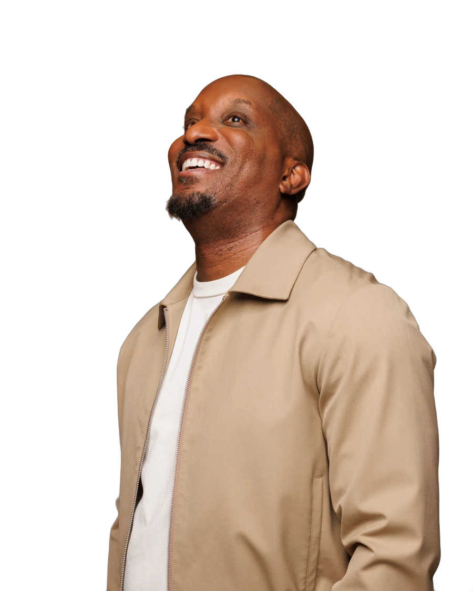

Current

Original studio photo with its tan background.
Option 1 · Navy spotlight
Same photo, background removed. Deep navy with a soft spotlight, so the tan jacket stands out.
Option 2 · Smiling, navy spotlight
Different photo: looking up with a big smile. Warmer and more charming, on the same navy spotlight.

Option 3 · Light cream
Same photo, background removed, on a light warm cream. A bright portrait inside the dark section.